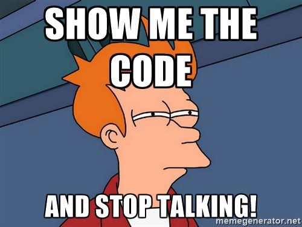

Cascata
Incremental
Prototipação
Scrum
XP
Kanban
Testes unitários
Testes funcionais
Testes de integração
Onde Python entra nessa teoria toda?
from unittest import TestCase
from my_project import soma
class TestClass(TestCase):
def test_basic(self):
self.assertEquals(1, 1)
def test_soma(self):
result = soma(1, 2)
self.assertEquals(result, 3)Sou desenvolvedor web e só uso Django
Mas antes disso
from django.test import TestCase
from .models import People
class PeopleTestCase(TestCase):
def setUp(self):
People.objects.create(name="Lucas",
expertise="consertar bugs")
People.objects.create(name="Juliana",
expertise="fazer massagem")
def test_people_expertise(self):
lucas = People.objects.get(name="lucas")
juliana = People.objects.get(name="cat")
self.assertEqual(lucas.what_expertise(),
'Lucas é especialista em "consertar bugs"')
self.assertEqual(juliana.what_expertise(),
'Juliana é especialista em "fazer massagem"')Testando o código!
$ python manage.py test
Creating test database for alias 'default'...
System check identified no issues (0 silenced).
---------------------------------------------------------------
Ran 1 tests in 0.017s
OK
Destroying test database for alias 'default'...